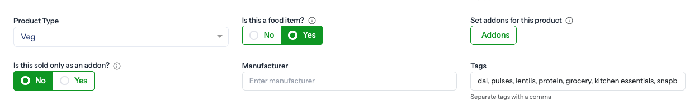
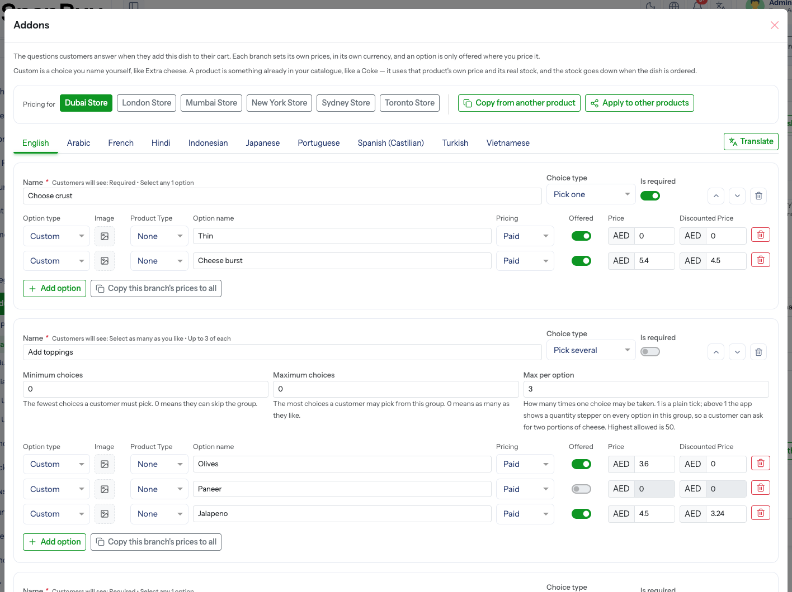

Food Items & Addons
Menu path: Products → edit a product → Product Details
A food item is something made to order — a pizza, a burger, a thali. Instead of going straight into the cart, it asks the customer questions first: which crust, which toppings, which drink. Those questions are its addons.

The two flags
Every product carries two independent answers on Product Details.
| Question | Yes means |
|---|---|
| Is this a food item? | Made to order. The customer is asked to choose options before it reaches the cart. The Addons button appears beside it. |
| Is this sold only as an addon? | Sold only alongside something else — a 50 ml dip, a sachet of mayo. It can still be attached to a dish, but customers never find it on its own in listings, search or the home screen. |
These two are opposites, not a pair
A food item is the dish that asks the questions. An addon-only item is one of the answers, and is usually not food at all — a bottled drink, for example. A product can be neither, either, or in rare cases both.
Food is a separate flag from Product Type
A food item is still veg or non-veg, so the two cannot share one field. Set Product Type as you always would; the food answer sits beside it.
Opening the addon editor
The Addons button only appears once Is this a food item? is Yes, and it needs a product that already exists — addons hang off a saved product.
Save the product first
On a brand-new product the button stays disabled until a category and a product name are filled in, with the tooltip “Choose a category and enter a product name first, then you can set up addons.” Save the draft, then open Addons.
The editor opens over the product form, so nothing unsaved on the product is lost. It has its own Save — a menu can be edited without re-saving the whole product.

Groups — the questions
Each group is one question put to the customer.
| Field | Meaning |
|---|---|
| Group name | What the customer is asked — Choose your crust, Extra toppings |
| Choice type | Pick one (radio) or Pick several (checkboxes) |
| Is required | Yes: the group must be answered before the dish can go in the cart |
| Minimum choices | Fewest the customer must pick. 0 lets them skip the group. |
| Maximum choices | Most they may pick. 0 means as many as they like. |
| Max per option | How many times one choice may be taken. 1 is a plain tick; above 1 the app shows a quantity stepper on every option in the group, so a customer can ask for two portions of cheese. Highest allowed is 50. |
| Status | Inactive groups are not asked |
The order of groups in the editor is the order the customer sees. Drag to reorder.
What customers will see
The editor prints the rule it is about to apply under each group, so you never have to work the combination out yourself:
| Settings | Customers will see |
|---|---|
| Required, pick one | Select any 1 option |
| Min 2, max 2 | Select 2 options |
| Min 1, max 3 | Select 1 to 3 options |
| Max 3, not required | Select up to 3 options |
| Min 2, no maximum | Select at least 2 options |
| No limits | Select as many as you like |
| Max per option 2 | Up to 2 of each |
Options — the answers
Each option is one answer inside a group.
| Field | Meaning |
|---|---|
| Option type | Custom — a choice you name yourself, like Extra cheese. A product — something already in your catalogue, like a Coke. |
| Option name / Product | The label, or the catalogue product it points at |
| Image | Optional picture. A linked option takes the picture from its product. |
| Pricing | Paid with an amount, or Free |
| Price from | Only for linked options — Set here charges this dish’s own amount, Follow the product keeps using that product’s price at each branch, so you maintain it in one place |
| Offered | Per branch — an option is only sold where you price it |
A linked option uses real stock
Point an option at a product and it uses that product’s own price and its real stock. The stock goes down when the dish is ordered, exactly as if the product had been bought on its own.
A linked product with a different tax category
The whole line is taxed at the dish’s rate, not the linked product’s. The editor warns you when the two differ — “This product has a different tax category.”
Pricing per branch
Addon prices are per branch, in that branch’s own currency, exactly like product pricing. Pick a branch at the top of the editor and fill in its prices.
An option is offered only at the branches you price it at. Leave a branch blank and that branch simply does not offer the choice.
Copy this branch’s prices to all fills every other branch from the one you are on.
Check the branches that price in another currency
The copy is a straight number copy — 50 becomes 50 everywhere, whether that branch charges in ₹ or $. Review any branch on a different currency afterwards.
Reusing a menu
Two buttons at the top of the editor save retyping a whole menu:
| Button | Does |
|---|---|
| Copy from another product | Pulls a whole addon setup from a different food product into this one |
| Apply to other products | Pushes this product’s setup onto the food products you pick |
Both offer Replace what is already there. Leave it off to add alongside the existing groups; tick it to wipe the target’s setup first.
Only food products appear in these pickers
Addons are only asked on products marked as a food item, so only those products are offered as a source or a target. If the copy list is empty, no other food product has an addon setup yet.
Rules the panel enforces
| Message | Means |
|---|---|
| Every addon group needs at least one option. | An empty question cannot be asked |
| Every option needs a price at at least one branch. | An option nobody can buy is not saved |
| A branch is listed twice for the same option. | Duplicate branch row |
| A product cannot be attached as its own addon. | A dish cannot be its own topping |
| Choose a product before taking the price from the catalogue. | Follow the product with no product chosen |
| Minimum choices cannot be more than maximum choices. | Check the two numbers |
| Minimum / Maximum choices cannot be more than the number of options. | A rule the group can never satisfy |
| Addons can only be set up on a product marked as a food item. | Set the food flag first |
What the customer hits at checkout
The same rules are re-checked when the item goes into the cart and again when the order is placed, so a menu edited mid-session cannot slip a stale choice through:
| Customer sees | Cause |
|---|---|
| One of the selected options is no longer available. | The option was deactivated or deleted |
| One of the selected options is not available at this branch. | Not priced at the branch serving that order |
| One of the selected options does not have enough stock. | A linked product ran out |
| Please choose an option for <group>. | A required group left unanswered |
| Only one option can be chosen in this group. | Pick-one group |
| You have chosen more / fewer options than this group allows. | Min or max breached |
| You have chosen more of one option than this group allows. | Max per option breached |
Chosen addons travel with the order line and are printed on the invoice, the thermal invoice and the delivery receipt, so the kitchen and the rider both see them.
Bulk editing
A whole menu can be uploaded instead of typed. The product bulk sheet carries a second Addons tab — one row per option — covered under Bulk Upload.
Troubleshooting
| Symptom | Cause | Fix |
|---|---|---|
| Addons button missing | Is this a food item? is No | Set it to Yes |
| Addons button disabled | The product has never been saved | Fill in category and name, save the draft, reopen |
| Addon not offered to customers | Not priced at the branch serving that zone | Price it on that branch, or tick Offered |
| Option sold out unexpectedly | It is a linked product and that product’s stock ran out | Restock the product, or switch the option to Custom |
| An addon-only product shows in search | Is this sold only as an addon? is still No | Set it to Yes |
| Prices look wrong at one branch | Copy this branch’s prices to all carried numbers across currencies | Re-enter that branch’s prices |
Checklist
- Dish marked Is this a food item? → Yes
- Products that are only ever toppings marked sold only as an addon
- Every group has at least one option
- Required groups have a sensible minimum
- Max per option set where a customer may want two of something
- Every option priced at every branch that sells the dish
- Linked options point at products that are actually stocked
- Ordered the dish once on a real device and checked the invoice shows the choices